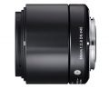

该镜头采用SLD特殊低色散镜片可以有效补正倍率色像差和轴向色像差，同时由于内置了非球面镜片能能有效补正慧形像差。采用6组8片的镜头结构，最近拍摄距离为50mm，最大放大倍率为0.139倍。采用内对焦方式。在M4/3与NEX机身上等效焦距分别为120mm和90mm。然而这款镜头并不是微距镜头。
刚才评了手里的19和30头，这个头因为焦段和光圈的尴尬一直没有买，只在店里使用过
天花板画质，E卡口之最强没有之一
几乎没人买，因为焦段尴尬，光圈尴尬